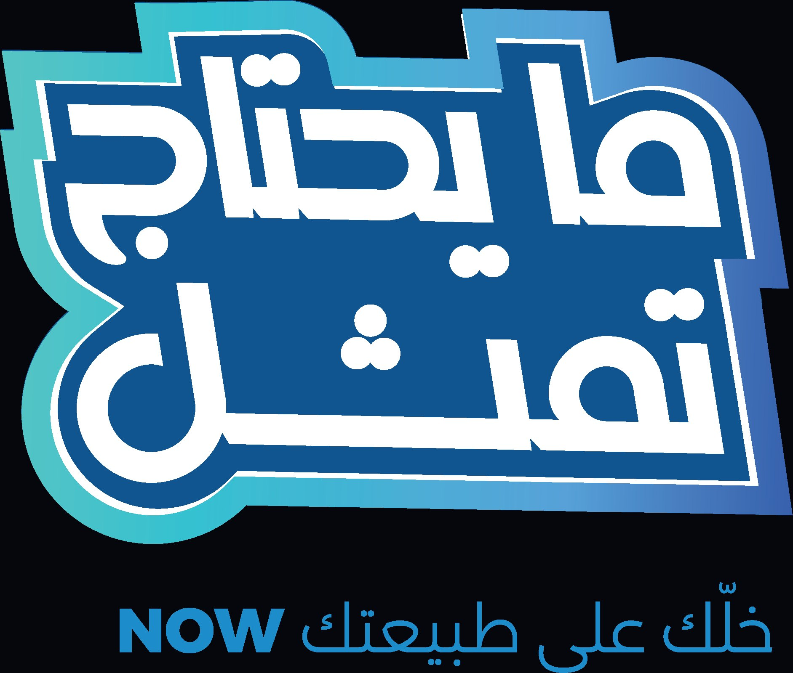
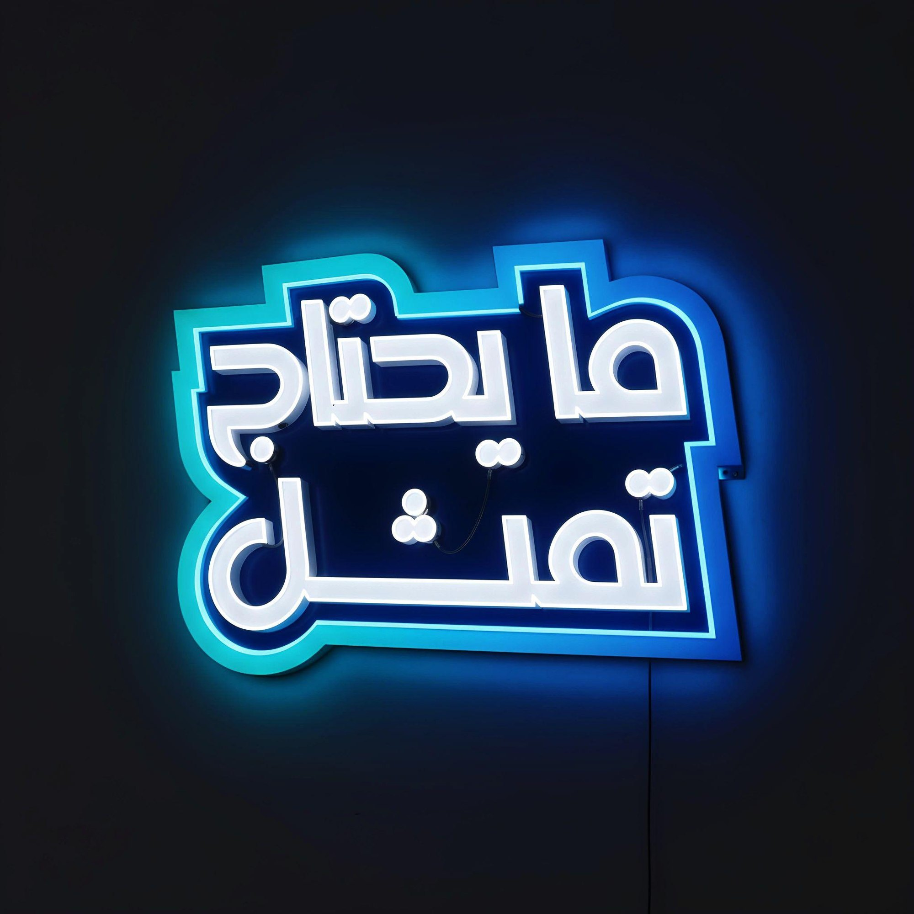
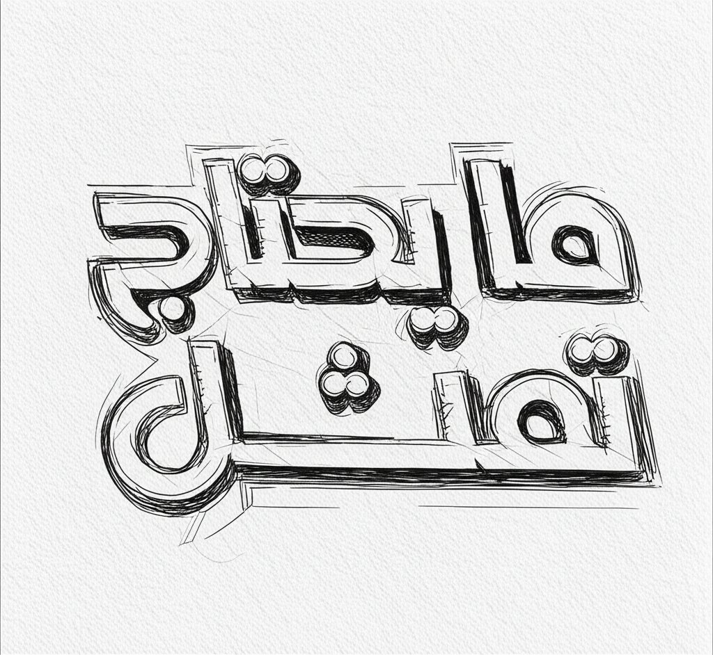
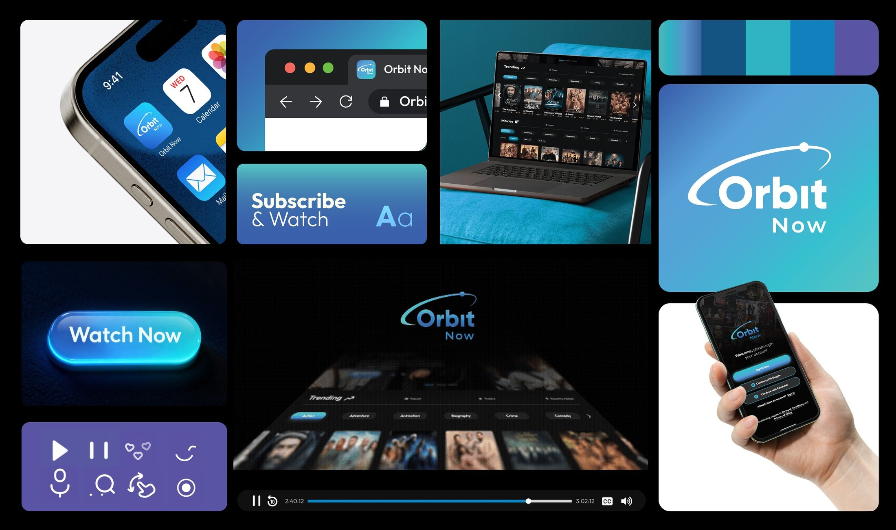
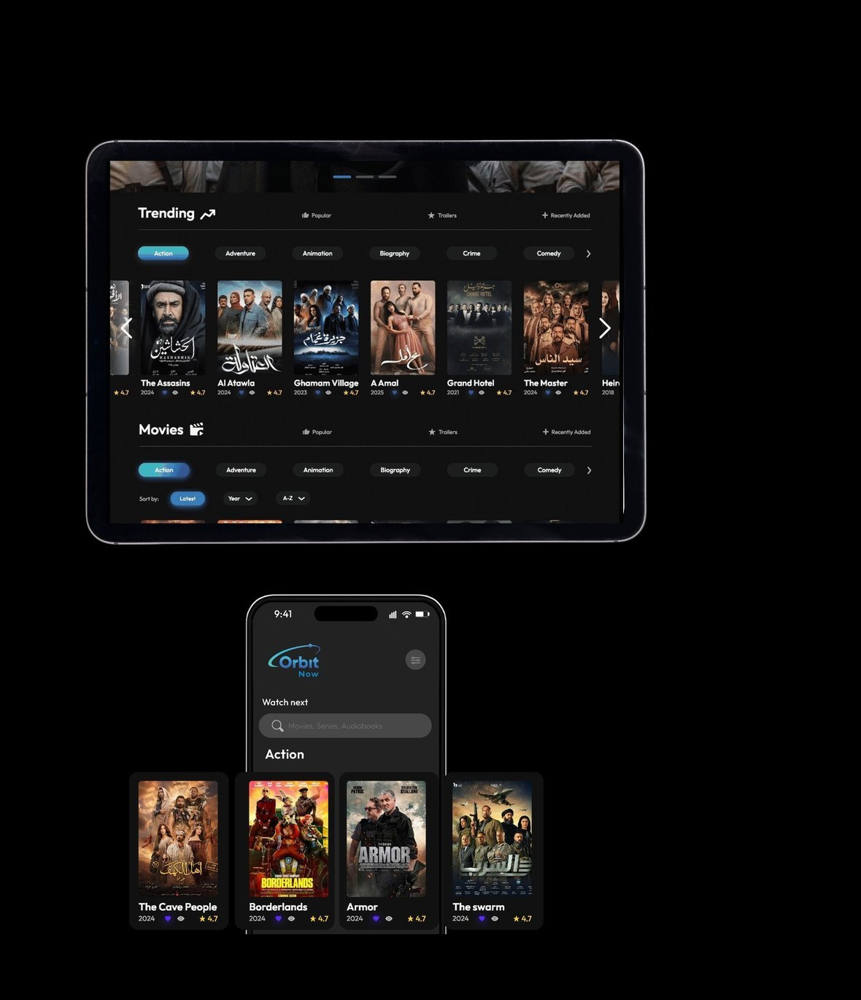
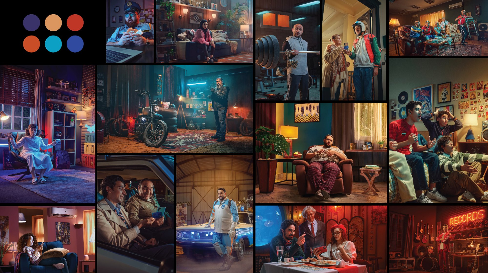
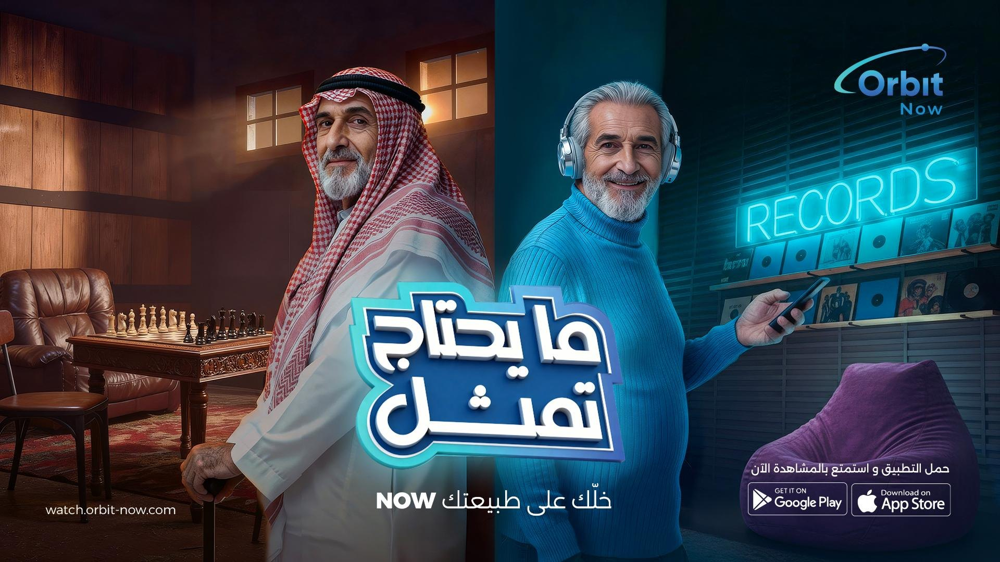
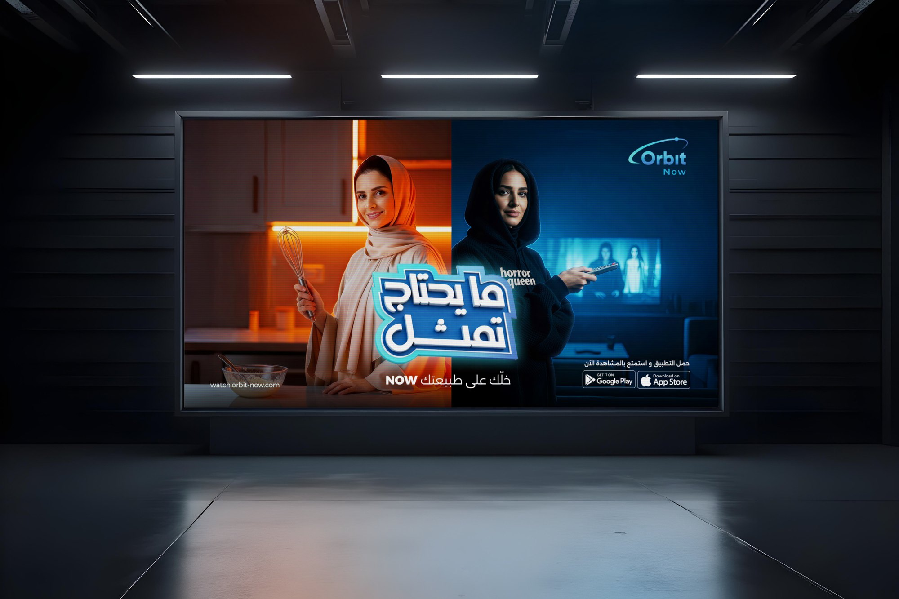
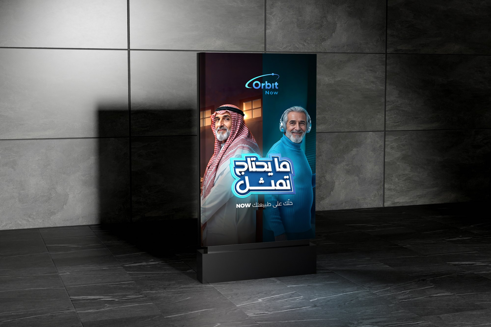
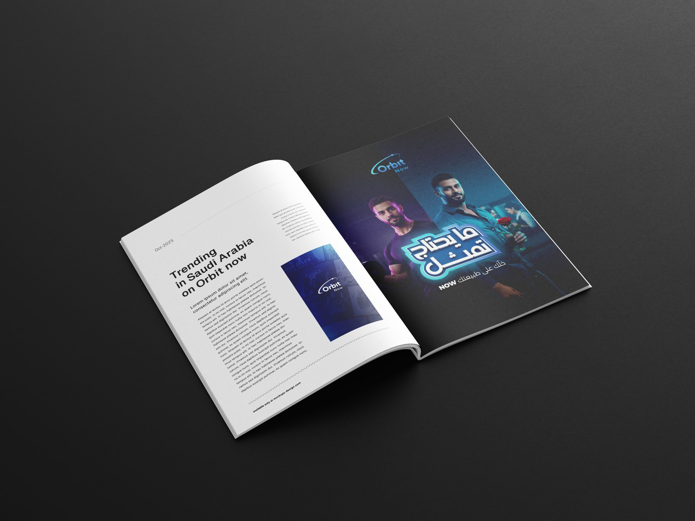

Orbit Now
Campaign · ما يحتاج تمثّل · Be yourself, NOW
No need to act.
Everyone plays a role outside: the gym regular, the perfect host, the serious elder. At home, in front of the screen, the act stops. «ما يحتاج تمثّل», no need to act, signs off with «خلّك على طبيعتك NOW»: be yourself, and watch what you actually love.
A line you can hold
The headline was built as an object: sketched by hand, set flat for print, lit in neon and animated for screens.



Orbit, brighter
A cleaner logo, a blue-to-teal gradient, glowing buttons and a soft icon set, carried from the app icon to the browser tab and the player.

Animated branding
The headline assembles, the orbit ring draws the logo, and the two lock up together as the end frame for every film and story.
Made for the sofa
A darker, poster-led interface where the content is the colour, with one tap to Watch Now on tablet, phone and web.

The lookbook
Lived-in rooms, practical light and real Gulf characters caught off guard, so every frame feels like a scene from home rather than an ad.

Two sides of everyone
Each frame splits one person in two: warm light for the role they play, Orbit blue for the taste they keep. The headline sits on the seam.


In the feed
Vertical cuts of each pair for the feed, with the headline and the sign-off kept large enough to read at thumb speed.
On the street
The split frames on a digital billboard, a backlit lightbox and a printed feature: the seam reads from across the road and up close.



Be yourself.
Now.
One honest line, a brighter brand and an interface that gets out of the way: Orbit Now, for the person you are at home.